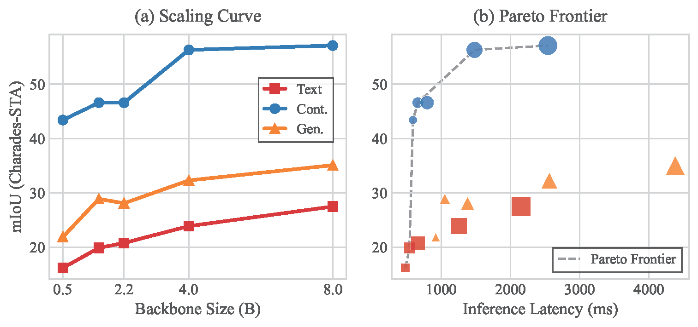
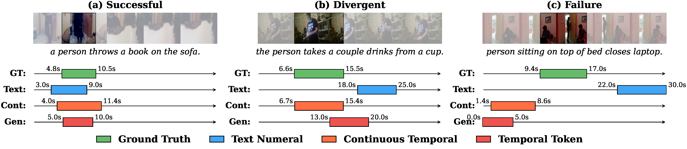
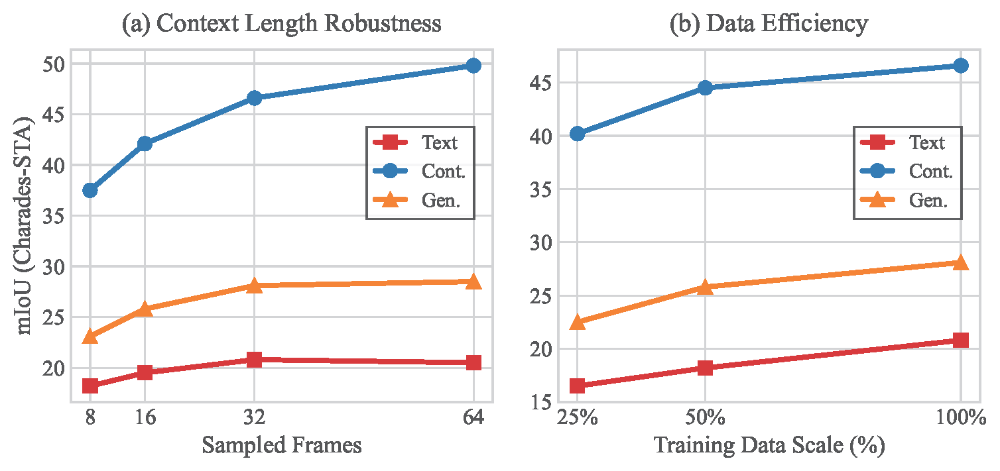
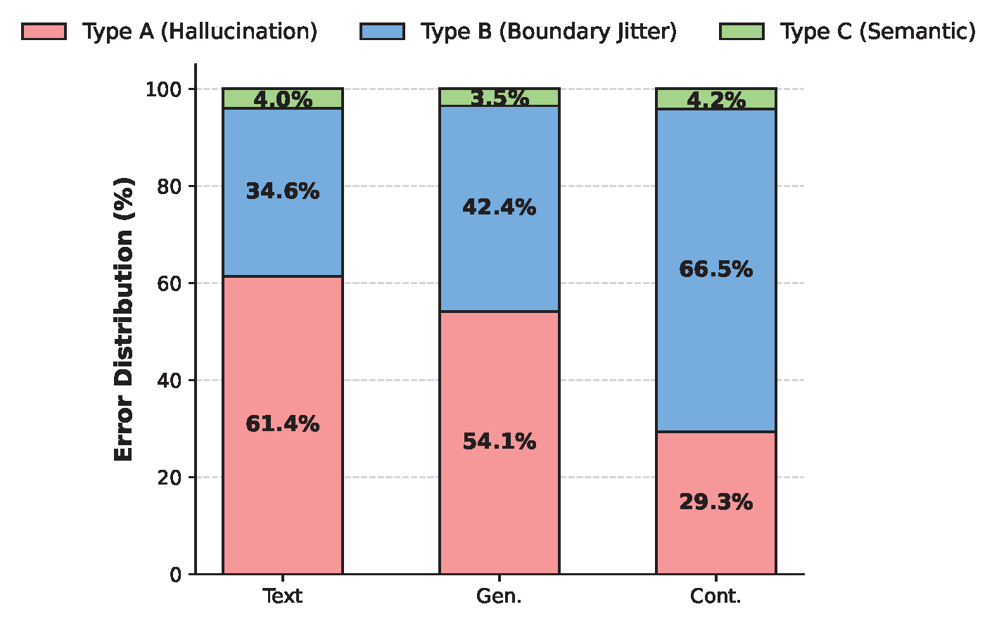
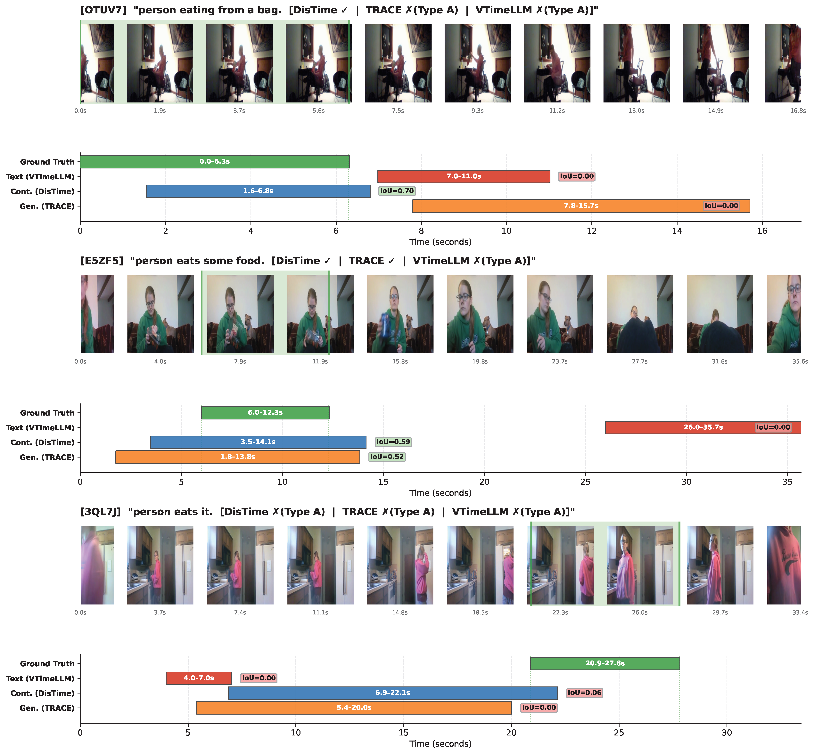
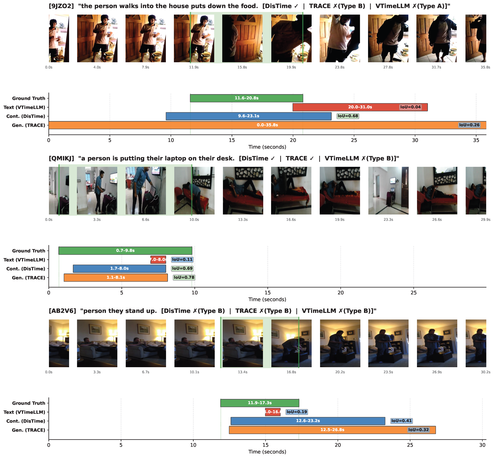
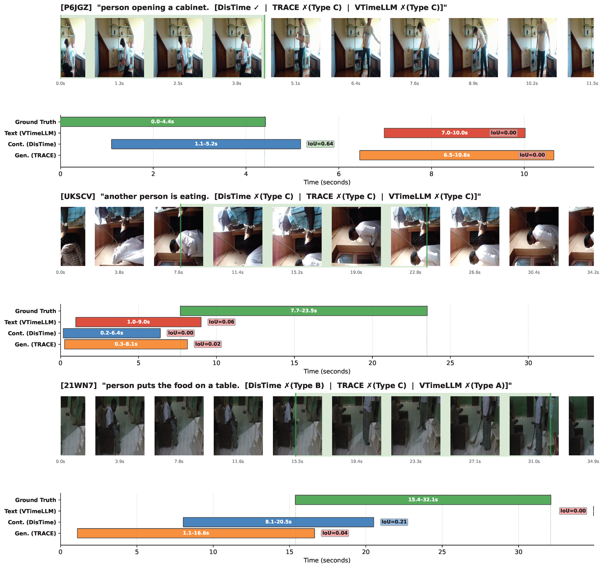

Type A: Temporal Hallucination
The Text and Generative paradigms frequently predict completely disjoint timeframes, while the Continuous paradigm is significantly more robust against blind guessing.
While Multimodal Large Language Models (MLLMs) have advanced Video Temporal Grounding (VTG), existing methods often couple output paradigms with different backbones, datasets, and training protocols. This makes it challenging to isolate the specific impact of the output design. Additionally, as VTG systems are increasingly considered for resource-constrained edge deployment, the trade-off between output formulation and system-level efficiency requires systematic investigation.
In this paper, we present a controlled empirical study comparing three dominant VTG output paradigms: Text Numeral Generation, Temporal Token Generation, and Continuous Temporal Decoding. We evaluate these paradigms across identical compact VLMs (SmolVLM2, FastVLM, and Molmo2) using consistent datasets and LoRA fine-tuning protocols. Evaluations on Charades-STA, QVHighlights, and YouCook2 measure both localization accuracy and system efficiency, including inference latency, training throughput, and parameter overhead.
Our results demonstrate that the choice of output formulation significantly affects both grounding accuracy and computational cost, independent of model scale. Specifically, the continuous distribution paradigm consistently achieves the most favorable efficiency-accuracy trade-off on the Pareto frontier, delivering robust localization with minimal latency overhead.
Under strictly controlled settings, the Continuous Temporal Decoding paradigm consistently achieves the best localization accuracy across all tasks and backbone scales. At Molmo2-8B, it reaches 57.1% mIoU on Charades-STA and 72.6% R1@0.5 on QVHighlights, while the Text Numeral baseline plateaus at 27.5% mIoU at the same scale.
| Backbone | Paradigm | Charades-STA | QVHighlights | ||||
|---|---|---|---|---|---|---|---|
| R1@0.5 | R1@0.7 | mIoU | R1@0.5 | R1@0.7 | mIoU | ||
| SmolVLM2-0.5B | Text | 15.1 | 6.8 | 16.2 | 9.0 | 5.6 | 12.9 |
| Cont. | 41.8 | 22.5 | 43.4 | 46.9 | 31.0 | 50.4 | |
| Gen. | 20.1 | 9.5 | 21.9 | 14.7 | 9.6 | 18.6 | |
| FastVLM-1.5B | Text | 19.5 | 8.9 | 19.9 | 11.7 | 7.6 | 16.5 |
| Cont. | 51.3 | 25.1 | 46.6 | 60.9 | 35.5 | 54.6 | |
| Gen. | 26.2 | 12.3 | 28.9 | 18.4 | 12.3 | 24.0 | |
| SmolVLM2-2.2B | Text | 19.4 | 8.7 | 20.8 | 11.6 | 7.2 | 16.5 |
| Cont. | 50.8 | 24.3 | 46.6 | 60.1 | 34.6 | 54.4 | |
| Gen. | 25.8 | 12.2 | 28.1 | 18.9 | 12.3 | 23.9 | |
| Molmo2-4B | Text | 22.3 | 10.0 | 23.9 | 13.3 | 8.3 | 19.0 |
| Cont. | 65.8 | 37.6 | 56.3 | 69.1 | 42.8 | 59.6 | |
| Gen. | 33.7 | 16.0 | 32.3 | 21.7 | 14.1 | 27.5 | |
| Molmo2-8B | Text | 25.6 | 11.5 | 27.5 | 15.3 | 9.5 | 21.8 |
| Cont. | 66.8 | 39.3 | 57.1 | 72.6 | 46.1 | 61.2 | |
| Gen. | 37.1 | 19.1 | 35.1 | 24.9 | 16.2 | 31.5 | |
(a) Scaling Curve: The paradigm gap remains structurally persistent from 0.5B to 8B. The Continuous model at just 0.5B (mIoU 43.4%) already outperforms the Text paradigm scaled all the way to 8B (mIoU 27.5%), demonstrating a strong "paradigm dividend." (b) Pareto Frontier: The Continuous paradigm dominates the Pareto frontier, achieving the best trade-off between inference latency and localization accuracy through non-autoregressive decoding.

Predictions from all three paradigms on SmolVLM2-2.2B across three difficulty levels: (a) a simple action where all paradigms succeed, (b) a temporally ambiguous query where only Continuous aligns precisely (IoU 0.99), and (c) a compound action requiring causal reasoning where all paradigms fail.

(a) Context Length Robustness: The Text paradigm saturates early and slightly degrades at 64 frames, while Continuous scales steeply to 49.8 mIoU, proving immune to sequence dilution. (b) Data Efficiency: Continuous trained on merely 25% data (40.2% mIoU) substantially outperforms Text (20.8%) and Generative (28.1%) trained on 100% data.

We systematically categorize failure cases (IoU < 0.5) into three error types: Type A (Temporal Hallucination) where predictions are completely disjoint from ground truth, Type B (Boundary Jitter) where the event is identified but boundaries are imprecise, and Type C (Semantic Failure) where the query is fundamentally misunderstood. The Continuous paradigm drastically shifts the error mode from severe hallucinations (29.3%) to minor boundary jitters (66.5%).

The Text and Generative paradigms frequently predict completely disjoint timeframes, while the Continuous paradigm is significantly more robust against blind guessing.

Even when the Continuous paradigm fails the strict IoU threshold, its errors are predominantly benign boundary jitters rather than severe hallucinations, typically manifesting as slightly over-extended temporal windows.

Semantic failures represent a universal challenge across all paradigms, where models fundamentally misunderstand the query or confuse similar actions occurring at different times.

@inproceedings{jin2025tgparadigms,
author = {Jin, Shengji and Zou, Yuanhao and Zhu, Victor and Ji, Zhengping and Chen, Chen},
title = {How Should Video LLMs Output Time? An Analysis of Efficient Temporal Grounding Paradigms},
booktitle = {CVPR 2025 Workshop on Efficient and On-Device Computational Vision (ECV)},
year = {2025},
}